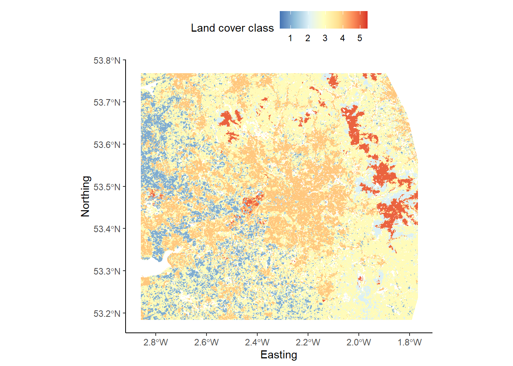
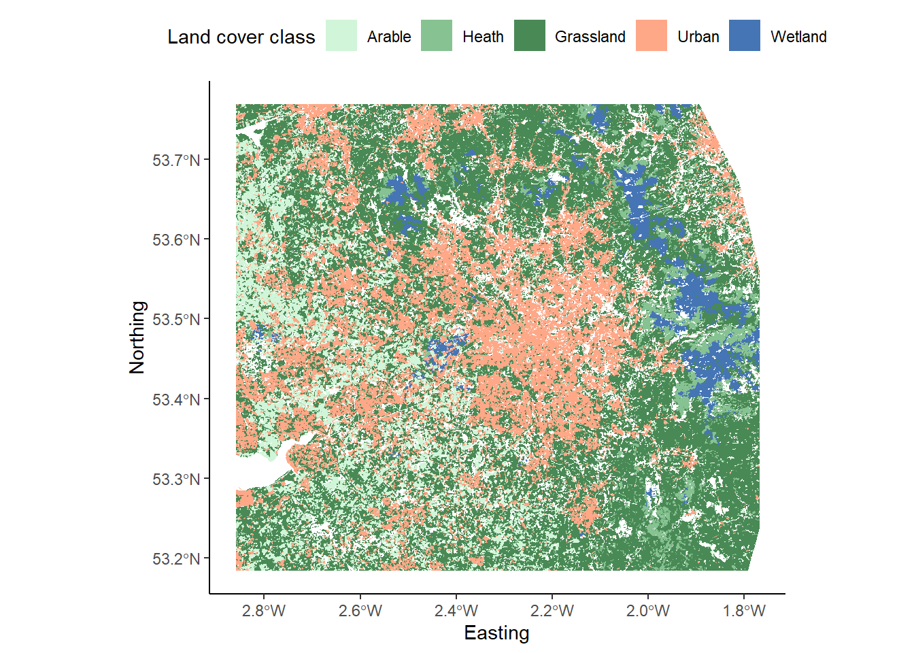

Chapter 10 Mersey IV - Surface derivatives
10.1 Task 4: Reclassification
We know from the lecture that some of the factors which influence river hydrochemistry include land cover, soil type and bedrock geology. Information on these characteristics for the Mersey region under study is contained in the categorical files mersey_LC (based on LCM2000 data), mersey_HOST (Hydrology of Soil Types) and mersey_bedrock respectively. These datasets contain many different detailed classes, some of which are not applicable to the study region. Therefore, the datasets need to be simplified by aggregating some classes and omitting unnecessary classes.
We’ll illustrate the process for the land cover raster, which you can then repeat for the soil type and bedrock rasters.
10.1.1 Land cover
There are 26 classes in LCM2000 data, each with a unique numeric identifier. We are going to simplify these into the following five macro-classes, alongside their numeric identifiers:
- Arable = 41, 42, 43;
- Heath = 91, 101, 102;
- Grassland = 51, 52, 61, 71, 81;
- Urban = 171, 172;
- Wetland = 111, 121.
To do so, we’re going to use the fct_collapse function from the forcats package.
First, load the land cover raster into R as normal:
# Loads land cover raster
land_cover <- raster(here("data", "practical_2", "mersey_LC.tif"))Because our raster is categorical (rather than continuous), it makes sense to convert the data format to a factor. In R, these are used to represent categorical variables.
Convert the land cover raster to a factor as follows:
# Converts the land cover raster to a factor, overwriting the original variable
land_cover <- as.factor(land_cover)To assess the values stored in the land_cover raster, use the unique function, which should produce the following:
## [1] -9999 0 11 21 41 42 43 51 52 61 71 81
## [13] 91 101 102 111 121 131 161 171 172 191 211 212
## [25] 221As not all categories are applicable to our study area, we are next going to create a data frame of the land cover categories of interest.
Inspect the code below. Many of the code elements should be familiar to you. We are creating a vector called
categoriesusing thec()function, which contains all the classes of interestc(41, 42, 43, ...)). Next, we have converted that to a data frame usingas.data.frame()and assigned a column name (ID). When you understand what is happening, add to your script and run.
# Categories of interest
categories <- as.data.frame(c(41, 42, 43, 91, 101, 102, 51, 52, 61, 71, 81, 171, 172, 111, 121))
colnames(categories) <- "ID"If you want to inspect the output, you can use
head(categories)to print out the first 6 rows:
## ID
## 1 41
## 2 42
## 3 43
## 4 91
## 5 101
## 6 102Using this new data frame, we are going to create a new column called name, which corresponds to the name of the land cover class (e.g. \(Arable = 41\))
# Collapse categories into groups based on ID
categories$name <- fct_collapse(as.factor(categories$ID),
"Arable" = c("41", "42", "43"),
"Heath" = c("91", "101", "102"),
"Grassland" = c("51", "52", "61", "71", "81"),
"Urban" = c("171", "172"),
"Wetland" = c("111", "121"))Inspect the above code. The syntax is reasonably complex, but you should understand what is happening if you inspect the output:
# Prints categories data frame
categories## ID name
## 1 41 Arable
## 2 42 Arable
## 3 43 Arable
## 4 91 Heath
## 5 101 Heath
## 6 102 Heath
## 7 51 Grassland
## 8 52 Grassland
## 9 61 Grassland
## 10 71 Grassland
## 11 81 Grassland
## 12 171 Urban
## 13 172 Urban
## 14 111 Wetland
## 15 121 WetlandFinally, we can use this updated data frame to replace (or substitute) values in the land cover raster (i.e. \(41, 91, ...\)) with the land cover class it represents. In this case, values are stored numerically (i.e. \(Arable =1,Heath =2, ...\)). One way to achieve this is using the subs function from the raster package.
Inspect the following code, which substitutes (reclassifies) the raster layer and saves to a new raster (
.tif) using thewriteRasterfunction.
# Substitutes raster values with new categories
land_cover_classified <- subs(land_cover, categories)
# Write to new raster
writeRaster(land_cover_classified, here("output", "practical_2", "mersey_LC_reclass.tif"))When you understand it, run the code, load the new raster into R and plot. Use the code below to visualise the reclassified raster, taking note of the updated fill aesthetic (
scale_fill_distiller):
# Loads land cover raster using the raster and here packages
mersey_land_cover <- raster(here("output", "practical_2", "mersey_LC_reclass.tif"))
# Plots using ggplot
p <- ggplot() +
layer_spatial(mersey_land_cover, aes(fill = stat(band1))) + # Adds raster layer
theme_classic() +
labs(fill = "Land cover class", x = "Easting", y = "Northing") +
scale_fill_distiller(palette = "RdYlBu", na.value = NA) + # Updated fill aesthetic
theme(legend.position = "top")
p 
In the above image, the land cover classes are shown as follows:
- Arable = 1 (dark blue)
- Heath = 2 (light blue)
- Grassland = 3 (yellow)
- Urban = 4 (orange)
- Wetland = 5 (red)
Using the methodology outlined above, repeat this process for the soil type (
mersey_HOST) and bedrock geology rasters (mersey_bedrock). Make sure to use a consistent approach to file naming e.g.mersey_HOST_reclass.tifandmersey_bedrock_reclass.tif.
10.1.2 Hydrology of Soil Types (HOST)
There are 29 classes in HOST, each with a unique numeric identifier. Reclassify these into the following four new classes:
- Perm (permeable) = 1, 3, 4, 5, 6, 7, 15, 16;
- Imperm (impermeable) = 12, 17, 18, 19, 21, 22;
- Gleyed = 8, 9, 13, 24;
- Peats = 10, 11, 14, 25, 26, 27, 29.
Utilising the order above, the values of the output raster should be as follows:
- Perm = 1
- Imperm = 2
- Gleyed = 3
- Peats = 4
10.1.3 Bedrock geology
There are 34 bedrock geology classes in Mersey Basin region, each with a unique numeric identifier. Reclassify into the following three new classes listed below:
- Sandmud (sands and muds) = 5, 16, 18, 24, 28, 34;
- Limestone = 10, 11, 17, 19;
- Coal = 9, 15, 22.
Utilising the order above, the values of the output raster should be as follows:
- Sandmud = 1
- Limestone = 2
- Coal = 3
10.2 Task 5: Calculating surface derivatives
As well as the factors outlined above, other catchment characteristics may affect river hydrochemistry. Here, we are interested in the effects of elevation (the raw data from mersey_DEM_fill) and rainfall (mersey_rainfall), as well as topographic slope and aspect. These are known as surface derivatives as they are calculated (derived) from the DEM.
To calculate slope and aspect rasters, use the wbt_slope and wbt_aspect functions, using the original filled DEM as the input data (mersey_dem_fill.tif) and using appropriate output names (e.g. mersey_dem_slope and mersey_dem_aspect). Your outputs should resemble the following:

10.3 Task 6: Extracting surface derivatives
At this stage of the analysis we have all the relevant spatial datasets compiled. The next step is to derive the characteristics for each of the 70 catchments in the mersey_watersheds file (.shp), so we can relate these to the water quality data collected at each of the 70 monitoring sites.
For each catchment we want to extract the:
- The area (km2);
- The number of raster cells;
- Average elevation;
- Average slope;
- Average aspect;
- Average rainfall;
- Percentage of the each of the five land cover classes present;
- Percentage of the each of the four soil types present;
- Percentage of the each of the three bedrock geology types present.
Overall, we will calculate the average of the continuous datasets (elevation, slope, aspect, rainfall), and percentages of the categorical datasets (land cover, soil types, geology).
First, however, we need to link our mersey_watersheds file with the measurements of water quality, currently stored in a comma-separated file (mersey_EA_chemisty.csv).
10.3.1 Water quality measurements
To begin:
Load the
mersey_watersheds.shpfile into R using thest_readfunction, storing in a variable calledwatersheds.
Next, print out attribute names for the shapefile as follows:
colnames(watersheds)## [1] "FID" "VALUE" "geometry"For our analysis, the attribute of interest is VALUE, which contains the unique Environment Agency ID for each watershed. Importantly, this is also found in the mersey_EA_chemisty.csv file. This will enable us to join the two datasets, populating the attribute table of the watersheds variable with the water quality measurements stored in the csv.
To simplify this, use the following code to replace the column name
VALUEwith a new nameSeed_Point_ID. The latter is used in themersey_EA_chemisty.csv.
# Replaces column name 'VALUE' with 'SEED_Point_ID'
names(watersheds)[names(watersheds) == 'VALUE'] <- 'Seed_Point_ID'You can re-use the
colnamesfunction to check it worked correctly:
With this updated:
We can now load the Environment Agency data using
read.csv(), as shown in Chapter 3:
# Loads csv using read.csv
ea_data <- read.csv(here("data", "practical_2", "mersey_EA_chemistry.csv"))and merge using the
mergefunction:
# Merge based upon matching Seed_Point_IDs
watersheds_ea <- merge(watersheds, ea_data, by = "Seed_Point_ID")Use the
head()function to inspect the first few rows of our new data frame.
## Simple feature collection with 6 features and 13 fields
## Geometry type: MULTIPOLYGON
## Dimension: XY
## Bounding box: xmin: 343660.8 ymin: 382963.7 xmax: 353552.6 ymax: 394555.6
## Projected CRS: OSGB 1936 / British National Grid
## Seed_Point_ID FID EA_ID Ph SSC Ca Mg NH4 NO3 NO2 TON PO4
## 1 1 54 1940214 7.79 21.37 60.82 11.12 0.24 2.64 0.08 2.73 0.34
## 2 2 42 1941025 7.79 33.52 75.45 17.52 4.46 3.24 0.11 3.35 0.99
## 3 3 40 1941017 8.55 11.69 58.54 20.50 0.25 0.83 0.02 0.84 0.07
## 4 4 47 1941007 7.71 34.06 96.83 46.33 0.24 3.65 0.07 3.73 0.21
## 5 5 45 1941002 8.08 70.81 141.98 85.85 0.40 4.47 0.05 4.52 0.14
## 6 6 44 1941003 8.12 34.00 174.49 86.27 0.21 2.69 0.06 2.75 0.15
## Zn geometry
## 1 50.00 MULTIPOLYGON (((345159.5 38...
## 2 20.51 MULTIPOLYGON (((348107.1 39...
## 3 35.23 MULTIPOLYGON (((346108.7 39...
## 4 74.26 MULTIPOLYGON (((350505.1 39...
## 5 20.16 MULTIPOLYGON (((351854 3906...
## 6 18.27 MULTIPOLYGON (((352903.1 39...10.3.2 Spatial areas
With our datasets now linked, we may want to calculate the area of our watersheds, expressed as either km2 or as a count of raster cells.
To calculate the km2 area, we can use the st_area() function. At it’s most simple, it could be written as follows:
# Calculates area geometry using st_area()
watersheds_ea$area <- st_area(watersheds_ea)However, because our vector data is measured in metres (due to the British National Grid), our calculated area would also be in metres. Given the size of the watersheds, this could result in large, unwieldy values.
To simplify, we’ll use the set_units function from the units package as follows, which will store our area in a more manageable km2 format:
# Calculates area geometry using st_area(), converting to km^2 using the units package
watersheds_ea$area <- set_units(st_area(watersheds_ea), km^2)Read the above code, add to your script and run.
The procedure for calculating the count of raster cells is slightly more complicated, because this depends on the spatial resolution of the raster layer. Our raster layer contains cells of approximately ~50 m2.
Here we can use the extract function from the raster package, which is described here. We’ll be using this function on a number of occasions in the remainder of this practical, so it’s important that you understand what it’s doing.
Broadly, the function extracts values from a raster object at the locations of spatial vector data, where the value of interest is user-defined. For example, this could be the mean (e.g. the average elevation of a DEM within a vector polygon), the count (e.g. the number of cells within a vector polygon), or a minimum or maximum (e.g. the maximum elevation within a vector polygon).
To calculate the number of raster cells within each watershed, we first need to load the DEM into R:
# Load elevation raster
mersey_dem <- raster(here("data", "practical_2", "mersey_dem_fill.tif"))before using the
extractfunction as follows. This takes in both raster (mersey_dem) and vector input data (watersheds_ea), where the value of interest is determined by thefunparameter (i.e. a function). Normally, we can specify an existing base R function (e.g. mean) but here we are using a user-defined functionfun=function(x, ...) length(x)to count the length (or number) of raster cells for each watershed.
# Calculates the number of raster cells per watershed
watersheds_ea$count <- extract(mersey_dem, watersheds_ea, fun=function(x, ...) length(x)) Run the above code, which should create a new attribute column called
count. This can be previewed usinghead(), specifying the column of interest ($count):
10.3.3 Continuous derivatives
Before we move on to extract our continuous derivatives (average elevation, rainfall, slope and aspect), it is worth noting that R variables can be removed from the environment as follows:
# Removes object(s) from memory
rm(mersey_dem)This can be useful if R is running slowly.
To extract continuous derivatives, we are going to use the extract function again.
First, ensure the DEM, rainfall, slope and aspect rasters are loaded into R and stored with sensible variable names (e.g.
mersey_dem,mersey_rainfall,mersey_slope,mersey_aspect).
The code to extract the average elevation for each watershed is shown here, using the function
mean:
# Extracts raster values for each watershed, calculates mean (fun=mean), and stores in attribute table ($average_elevation)
watersheds_ea$average_elevation <- extract(mersey_dem, watersheds_ea, fun=mean, na.rm=TRUE)When you’re happy you understand it, copy to your script and run, before repeating the process for the other continuous variables, and storing the data using sensible attribute names e.g.
watersheds_ea$average_elevation,$average_rainfall,$average_slope,$average_aspect.
Use the
head()function to inspect the output.
10.3.4 Calculating categorical derivatives
As we approach the end of this part of Practical 2, we are going to extract and normalise (convert to %) the categorical derivatives (land cover, soil types, bedrock).
First, ensure the reclassified land cover, soil type and bedrock rasters are loaded into R and stored with sensible variable names (e.g.
land_cover,soils,bedrock).
Next, we are going to use the
extractfunction again, but this time returning the count of each category (e.g. Arable, Heath, Grassland, Urban, Wetland) for each watershed area, as shown here:
# Extract land cover counts (5 classes so levels = 1:5)
land_cover_classes <- extract(land_cover, watersheds_ea, fun=function(i,...) table(factor(i, levels = 1:5)))Rather than trying to decipher the code straight away, copy to your script, run and use
head()to inspect the output, which should be as follows. This may take a little while (~30 seconds on a i7 computer with 16 Gb of RAM):
head(land_cover_classes)## 1 2 3 4 5
## [1,] 379 0 340 785 0
## [2,] 1832 0 984 861 0
## [3,] 42 0 491 524 0
## [4,] 177 0 49 249 0
## [5,] 185 0 55 57 0
## [6,] 154 0 61 246 0We have produced a data frame with 5 columns (representing the 5 land cover classes) and 70 rows (representing the 70 watersheds), where the row-column values represent the number of raster cells corresponding to each land cover class.
This is based upon a user-defined function, incorporating the table function from the data.table package. Important: as the land cover dataset contains 5 classes, the function splits the underlying data into five groups using levels = 1:5. This needs to be updated when applying to the soils and bedrock datasets.
To improve the readability of the data frame, update its column names as follows:
colnames(land_cover_classes) <- c("Arable", "Heath", "Grassland", "Urban", "Wetland")Use
head()to inspect the output:
head(land_cover_classes)## Arable Heath Grassland Urban Wetland
## [1,] 379 0 340 785 0
## [2,] 1832 0 984 861 0
## [3,] 42 0 491 524 0
## [4,] 177 0 49 249 0
## [5,] 185 0 55 57 0
## [6,] 154 0 61 246 0Replicate this approach for the soil type and bedrock datasets, using sensible variable names (e.g.
soils_classesandbedrock_classes), remembering to update theextractfunction used (i.e.levels = 1:4for the soil data andlevels = 1:3for the bedrock data).
When complete, you should have the following data frames in your R environment:
watersheds_ea:- containing the water quality measurements, the spatial areas and the continuous derivatives;
land_cover_classes:- containing the count (number of cells) for each land cover class;
soils_classes:- containing the count (number of cells) for each soil type;
bedrock_classes:- containing the count (number of cells) for each bedrock type;
To simplify your R environment, remove all other variables using the
rm()function.
To merge the remaining files, we can use cbind(), which binds data frames together based on their columns:
# Combines watersheds data frame with categorical counts
watersheds_ea <- cbind(watersheds_ea, land_cover_classes, soils_classes, bedrock_classes)10.3.5 Normalising categorical derivatives
In the final step of the practical, we are going to normalise our categorical derivatives i.e. to establish the percentage cover of each category, rather than a raw count of raster cells. The former is more informative as it allows us to compare watersheds of differing sizes.
This is a relatively simple calculation and involves dividing the total number of raster cells in each watershed (stored in $count) by the number corresponding to each category (stored in $Arable, $Heath, $Grassland, …), before multiplying by 100.
However, we have 12 categorical variables to normalise. We could type out each calculation manually e.g.
# Normalising categorical variables
watersheds_ea$Arable_percent <- watersheds_ea$Arable/watersheds_ea$count*100
watersheds_ea$Heath_percent <- watersheds_ea$Heath/watersheds_ea$count*100
atersheds_ea$Grassland_percent <- watersheds_ea$Grassland/watersheds_ea$count*100
...However, we don’t want to waste time or effort if we could perform these calculations iteratively.
To that end, we’ll start by:
Creating a vector of the column names we want to normalise:
# Creates vector of categorical variables
categorical_names <- c("Arable", "Heath", "Grassland", "Urban", "Wetland", "Permeable", "Impermeable", "Gleyed", "Peats", "Sands_and_Muds", "Limestone", "Coal")
# Prints vector
categorical_names## [1] "Arable" "Heath" "Grassland" "Urban"
## [5] "Wetland" "Permeable" "Impermeable" "Gleyed"
## [9] "Peats" "Sands_and_Muds" "Limestone" "Coal"Next, we are going to iterate through this vector using a for loop. This was illustrated briefly in Chapter 3 here, but we’ll explain it more fully now:
Copy the following code to your script and run:
# Loops through each element of categorical_names and stores it in variable "i"
for (i in categorical_names){
# Prints element stored in i
print(i)
}## [1] "Arable"
## [1] "Heath"
## [1] "Grassland"
## [1] "Urban"
## [1] "Wetland"
## [1] "Permeable"
## [1] "Impermeable"
## [1] "Gleyed"
## [1] "Peats"
## [1] "Sands_and_Muds"
## [1] "Limestone"
## [1] "Coal"The code works by looping (or iterating) through each element of the categorical_names vector. On every iteration, the variable i (short for iterator) is updated with the next element of categorical_names. On the first iteration, i = "Arable", on the second iteration i = "Heath", and so on.
Now copy and run the following updated version:
# Loops through each element of categorical_names and stores it in variable "i"
for (i in categorical_names){
# Creates a new column name using the variable "i" and the string "percent", separated by an underscore.
col <- paste(i, "percent", sep="_")
# Prints new column name
print(col)
}## [1] "Arable_percent"
## [1] "Heath_percent"
## [1] "Grassland_percent"
## [1] "Urban_percent"
## [1] "Wetland_percent"
## [1] "Permeable_percent"
## [1] "Impermeable_percent"
## [1] "Gleyed_percent"
## [1] "Peats_percent"
## [1] "Sands_and_Muds_percent"
## [1] "Limestone_percent"
## [1] "Coal_percent"Here we are iteratively creating a column name based on the element stored in the variable i i.e. "Arable_percent", "Heath_percent", "Grassland_percent".
In this final version of the for loop, we are creating new columns in the
watersheds_eadata frame based on the column name (col) and the normalisation approach described above (i.e. Arable/count*100). However, rather than having to specify the input and output columns manually, this is handled for us iteratively using thecolandivariables:
# Loops through each element of categorical_names and stores it in variable "i"
for (i in categorical_names){
# Creates a new column name using the variable "i" and the string "percent", separated by an underscore.
col <- paste(i, "percent", sep="_")
# Updates watersheds_ea with the percentage cover of each category
watersheds_ea[col] <- as.numeric(watersheds_ea[[i]]/watersheds_ea$count*100)
}When you’re happy you understand the above code, run it to finish the practical. Use
head()to inspect the final output, which should resemble the following:
## Simple feature collection with 6 features and 43 fields
## Geometry type: MULTIPOLYGON
## Dimension: XY
## Bounding box: xmin: 343660.8 ymin: 382963.7 xmax: 353552.6 ymax: 394555.6
## Projected CRS: OSGB 1936 / British National Grid
## Seed_Point_ID FID EA_ID Ph SSC Ca Mg NH4 NO3 NO2 TON PO4
## 1 1 54 1940214 7.79 21.37 60.82 11.12 0.24 2.64 0.08 2.73 0.34
## 2 2 42 1941025 7.79 33.52 75.45 17.52 4.46 3.24 0.11 3.35 0.99
## 3 3 40 1941017 8.55 11.69 58.54 20.50 0.25 0.83 0.02 0.84 0.07
## 4 4 47 1941007 7.71 34.06 96.83 46.33 0.24 3.65 0.07 3.73 0.21
## 5 5 45 1941002 8.08 70.81 141.98 85.85 0.40 4.47 0.05 4.52 0.14
## 6 6 44 1941003 8.12 34.00 174.49 86.27 0.21 2.69 0.06 2.75 0.15
## Zn area count average_elevation average_rainfall
## 1 50.00 3.9614467 [km^2] 1587 21.51344 539.8778
## 2 20.51 10.2618193 [km^2] 4111 39.95542 581.1832
## 3 35.23 3.6619044 [km^2] 1467 66.75006 591.3545
## 4 74.26 1.2131462 [km^2] 486 44.82042 549.0123
## 5 20.16 0.7413671 [km^2] 297 43.72755 557.1751
## 6 18.27 1.4028564 [km^2] 562 49.89805 562.9039
## average_slope average_aspect Arable Heath Grassland Urban Wetland Permeable
## 1 0.4837142 93.89182 379 0 340 785 0 0
## 2 1.2318246 206.14489 1832 0 984 861 0 271
## 3 1.9288961 196.52557 42 0 491 524 0 292
## 4 0.5148268 139.09166 177 0 49 249 0 0
## 5 1.6296281 120.98029 185 0 55 57 0 0
## 6 1.0673156 118.31011 154 0 61 246 0 0
## Impermeable Gleyed Peats Sands_and_Muds Limestone Coal
## 1 0 1030 557 1414 0 0
## 2 0 3463 377 4111 0 0
## 3 0 1175 0 1467 0 0
## 4 0 486 0 486 0 0
## 5 0 297 0 297 0 0
## 6 0 562 0 562 0 0
## geometry Arable_percent Heath_percent Grassland_percent
## 1 MULTIPOLYGON (((345159.5 38... 23.881537 0 21.42407
## 2 MULTIPOLYGON (((348107.1 39... 44.563367 0 23.93578
## 3 MULTIPOLYGON (((346108.7 39... 2.862986 0 33.46967
## 4 MULTIPOLYGON (((350505.1 39... 36.419753 0 10.08230
## 5 MULTIPOLYGON (((351854 3906... 62.289562 0 18.51852
## 6 MULTIPOLYGON (((352903.1 39... 27.402135 0 10.85409
## Urban_percent Wetland_percent Permeable_percent Impermeable_percent
## 1 49.46440 0 0.00000 0
## 2 20.94381 0 6.59207 0
## 3 35.71915 0 19.90457 0
## 4 51.23457 0 0.00000 0
## 5 19.19192 0 0.00000 0
## 6 43.77224 0 0.00000 0
## Gleyed_percent Peats_percent Sands_and_Muds_percent Limestone_percent
## 1 64.90233 35.097669 89.09893 0
## 2 84.23741 9.170518 100.00000 0
## 3 80.09543 0.000000 100.00000 0
## 4 100.00000 0.000000 100.00000 0
## 5 100.00000 0.000000 100.00000 0
## 6 100.00000 0.000000 100.00000 0
## Coal_percent
## 1 0
## 2 0
## 3 0
## 4 0
## 5 0
## 6 0In the final week of Environmental Modelling and Monitoring Concepts (Week 12, Mersey V), we’ll use this data frame to evaluate the environmental controls on water quality.